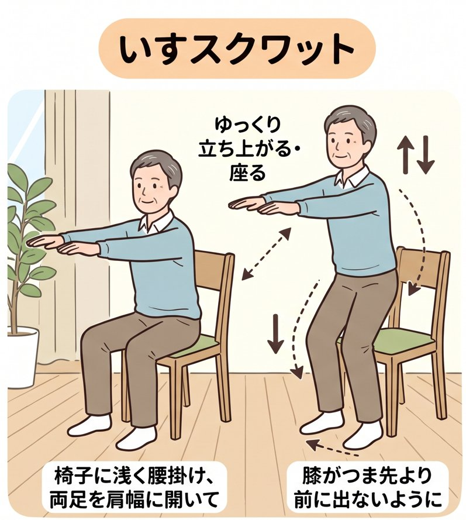

声で数えるので、画面を見ずに運動できます。家族それぞれ、年代に合わせたメニューを選べます。
記録はこの端末に保存しています。電波がなくても使えます。
年齢より、いまの体力に合わせて選んでかまいません。
一度にまとめてやるより、1日の中で分けて、こまめに動くほうが続けやすく効果的です。①基本と②おなかは別々にやってもポイントは同じです（それぞれ半分ずつ）。
| 時間帯 | やること | ねらい |
|---|---|---|
| 朝起きて30分〜1時間後 | ② おなか | 体を目覚めさせる。軽めで安全 |
| 昼食後〜夕方 | ① 基本 | 筋トレの本番。体が一番よく動く時間帯 |
| 夕食後30分ごろ | その場もも上げ1〜2分、または10分の散歩 | 食後の血糖値の上がりすぎを抑える。おなか周りの対策に |
| 寝る前 | 軽いストレッチだけ | 激しい運動は寝つきを悪くする |
出典：厚生労働省「健康づくりのための身体活動・運動ガイド2023」
Googleドライブを保管庫にして、同じ合言葉の端末どうしで記録を自動で合わせます。家族で同じ合言葉を使えば、家族全員の記録を共有できます。
合言葉を知っている人は、この記録を見ることができます。家族以外には教えないでください。
記録はこの端末の中に保存されています。別の端末（PC⇔スマホ）へ移すときや、念のための控えに使います。
読み込むと、この端末の記録はファイルの内容に置きかわります。
痛み・めまい・息苦しさを感じたら、すぐに中止してください。回数より「毎日少しずつ」が大切です。
体力年齢の判定基準：中谷敏昭ら「30秒椅子立ち上がりテスト（CS-30テスト）成績の加齢変化と標準値の作成」臨床スポーツ医学 20(3), 2003／文部科学省「体力・運動能力調査」年齢別平均値（上体起こし）。判定は目安で、医学的な診断ではありません。持病のある方は、運動を始める前に医師に相談してください。
